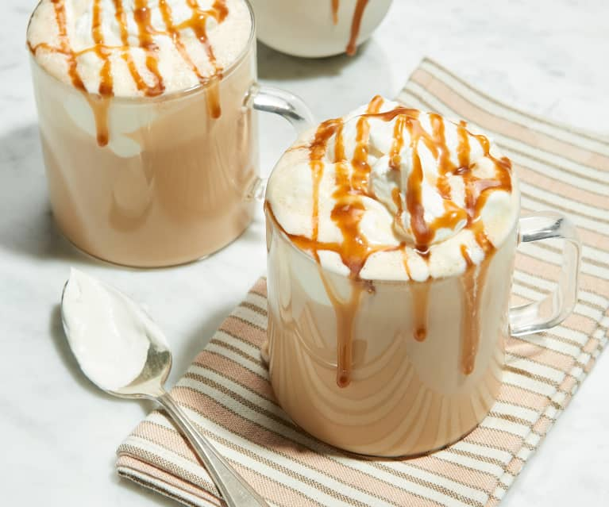
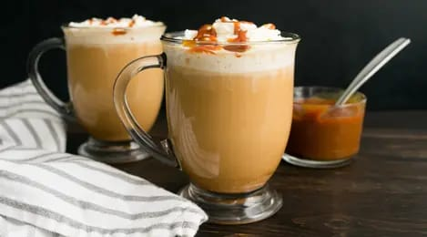
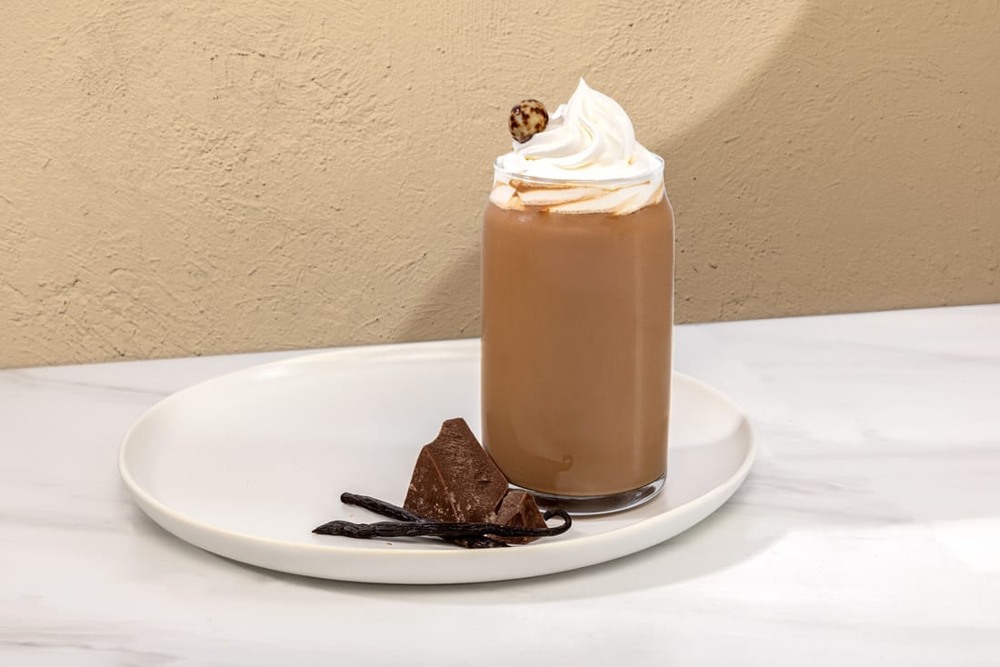
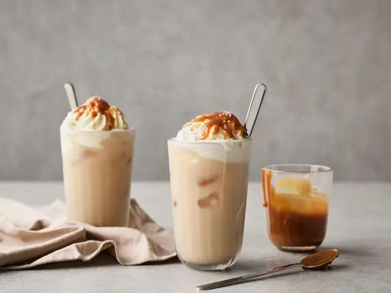
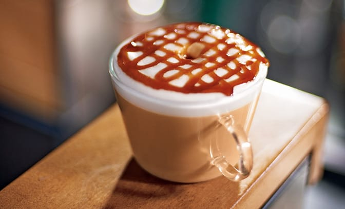
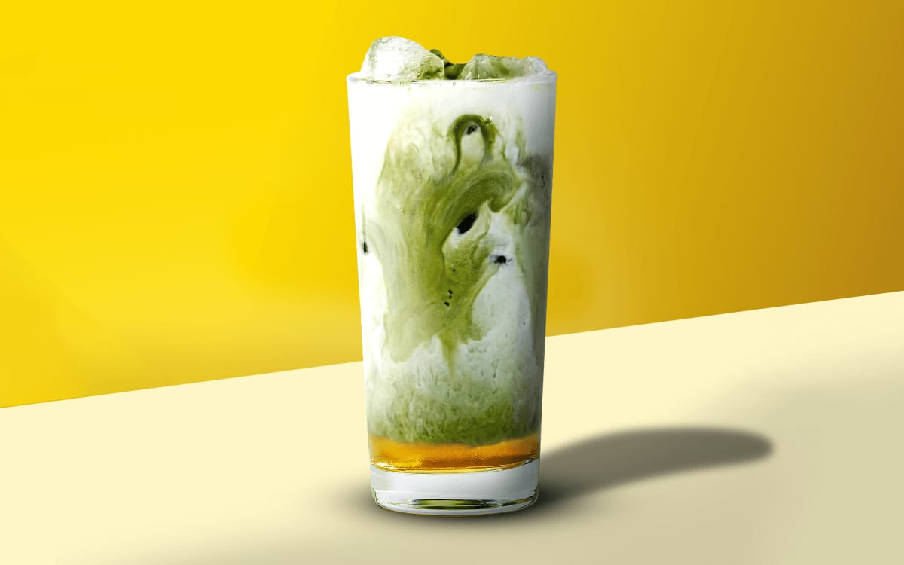
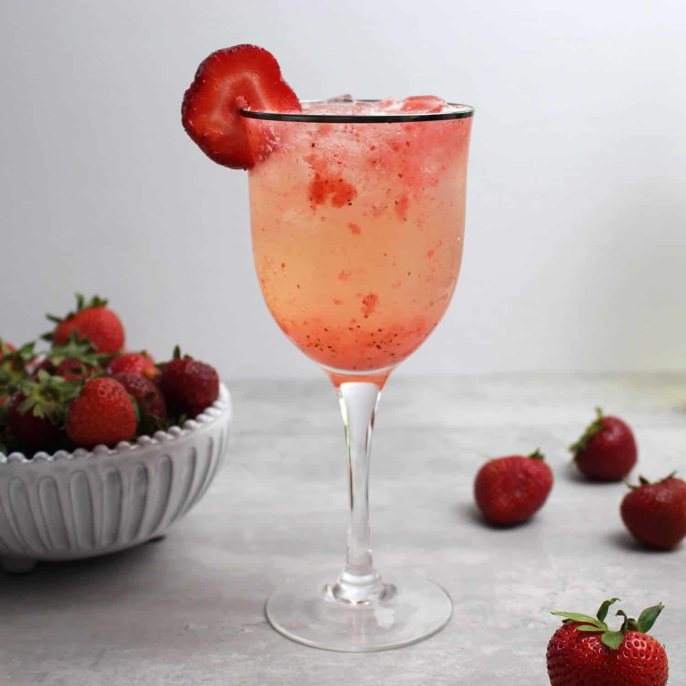
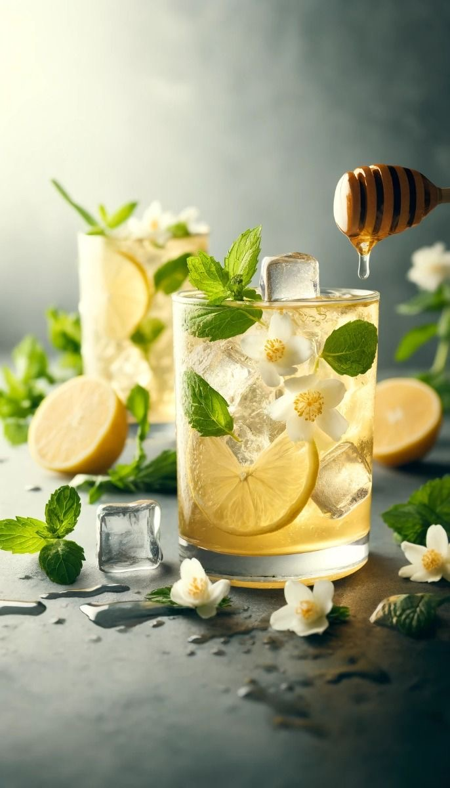
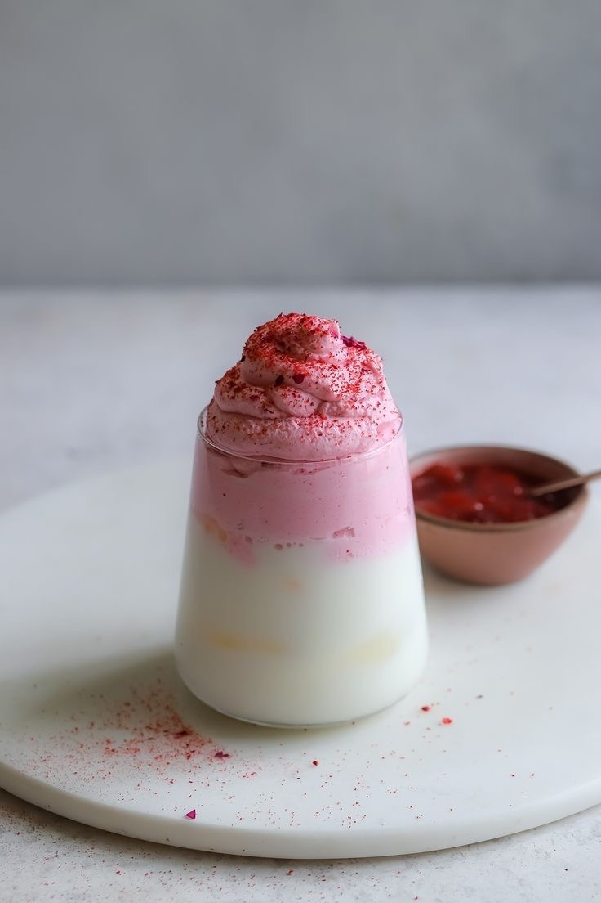

-Coffee

Caramel latte
Caramel latte
Butterscotch latte

Butterscotch latte

Vanilla mochachino
Vanilla mochachino
Salted Caramel Latte

Salted Caramel Latte

Matchiatto Hazelnut
Matchiatto Hazelnut
-Non-Coffee
Signature Matcha Latte

Signature Matcha Latte

Strawberry Sprincture
Strawberry Sprincture
Hot Chocolate

Hot Chocolate

Lemonade Jasmine Tea
Lemonade Jasmine Tea
Creamy Rose
